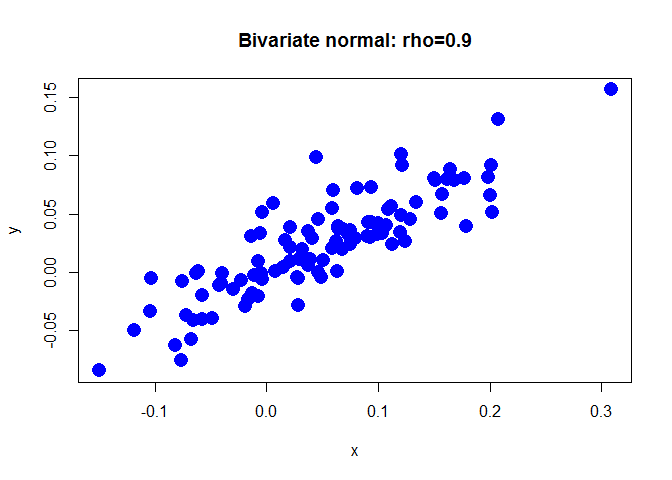
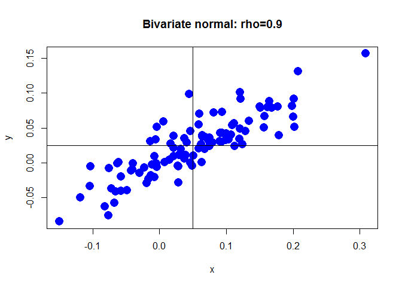
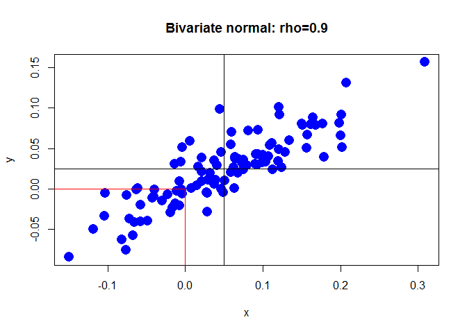
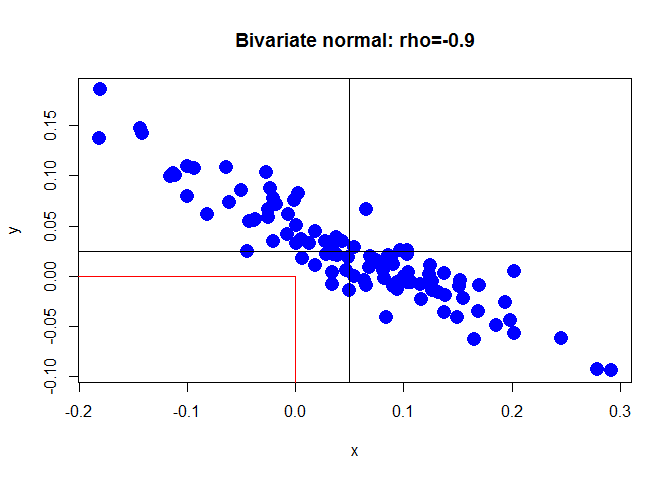
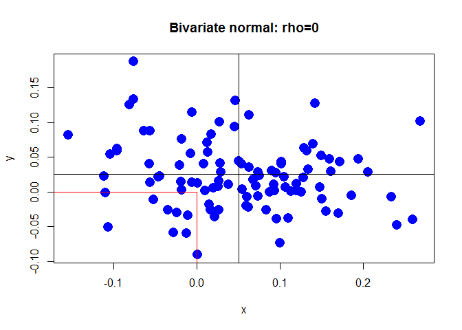

Lab 3 for Intorduction to computational finance
task 1 Covariance matrix
- Compute the covariance between X and Y and assign it to sig_xy.
- Construct the covariance matrix and assign it to Sigma_xy.
# Standard deviations and correlation
sig_x <- 0.10
sig_y <- 0.05
rho_xy <- 0.9
# Covariance between X and Y
sig_xy <- rho_xy*sig_x*sig_y
# Covariance matrix
Sigma_xy <- matrix(c(sig_x^2, sig_xy, sig_xy, sig_y^2), nrow = 2)
task 2 Simulate data
- Simulate 100 observations from the bivariate normal distributed random variables X and Y. Use the covariance matrix Sigma_xy from the previous exercise and suppose that the means are ??X=0.05 and ??Y=0.025. Assign the result to xy_vals.
- Have a look at the first few observations with the head() function.
#install.packages("mvtnorm")
library(mvtnorm)
# The covariance matrix (Sigma_xy) is still in your workspace
# Means
mu_x <- 0.05
mu_y <- 0.025
# Simulate 100 observations
set.seed(123) # for reproducibility
xy_vals <- rmvnorm(100, mean = c(mu_x, mu_y), sigma = Sigma_xy)
# Have a look at the first observations
head(xy_vals)
## [,1] [,2]
## [1,] -0.01055124 -0.002720223
## [2,] 0.19865393 0.081562113
## [3,] 0.12156743 0.091291081
## [4,] 0.04939103 -0.004618093
## [5,] -0.02987387 -0.014866126
## [6,] 0.17729184 0.080391233
task 3 Plot the simulated data
- Create a scatterplot of the simulated observations
- Customize the plot in the following way: specify the plot symbol with pch = 16, set the symbol size to 2, set the color to “blue”, use the title “Bivariate normal: rho=0.9”, and use the axis labels “x” and “y”.
# Create scatterplot
plot(xy_vals[,1], xy_vals[,2], pch = 16, cex = 2, col = "blue", main = "Bivariate normal: rho=0.9", ylab = "y", xlab = "x")

task 4 Add lines to the plot
- Add a vertical line that indicates the mean of X and a horizontal line that indicates the mean of Y.
plot(xy_vals[,1], xy_vals[,2], pch = 16, cex = 2, col = "blue", main = "Bivariate normal: rho=0.9", ylab = "y", xlab = "x")
abline(h = mu_y)
abline(v = mu_x)

task 5 Compute a joint probability
- Compute the joint probability Pr(X???0,Y???0).
plot(xy_vals[,1], xy_vals[,2], pch = 16, cex = 2, col = "blue", main = "Bivariate normal: rho=0.9", ylab = "y", xlab = "x")
# Add lines
abline(h = mu_y, v = mu_x)
# Add line segments
segments(x0 = 0, y0 = -1e10, x1 = 0, y1 = 0, col="red")
segments(x0 = -1e10, y0 = 0, x1 = 0, y1 = 0, col="red")

# Compute joint probability
pmvnorm(lower = -Inf, upper = 0, mean = c(mu_x, mu_y), sigma = Sigma_xy)
## [1] 0.2453259
## attr(,"error")
## [1] 1e-15
## attr(,"msg")
## [1] "Normal Completion"
task 6 Negatively correlated random variables
- Change the code to perform the same analysis with negative correlation ??XY=???0.9 instead of ??XY=0.9.
# Standard deviations and correlation
sig_x <- 0.10
sig_y <- 0.05
rho_xy <- -0.9
# Covariance between X and Y
sig_xy <- rho_xy * sig_x * sig_y
# Covariance matrix
Sigma_xy <- matrix(c(sig_x^2, sig_xy, sig_xy, sig_y^2), nrow = 2, ncol = 2)
# Means
mu_x <- 0.05
mu_y <- 0.025
# Simulate 100 observations
set.seed(123) # for reproducibility
xy_vals <- rmvnorm(100, mean=c(mu_x, mu_y), sigma = Sigma_xy)
head(xy_vals)
## [,1] [,2]
## [1,] 0.005403536 0.036129207
## [2,] 0.193766631 -0.026479922
## [3,] 0.002687517 0.082329487
## [4,] 0.137078885 -0.036566550
## [5,] 0.001017241 0.032743153
## [6,] 0.152351306 -0.004456129
# Create scatterplot
plot(xy_vals[, 1], xy_vals[, 2], pch = 16, cex = 2, col = "blue",
main = "Bivariate normal: rho=-0.9", xlab = "x", ylab = "y")
# Add lines
abline(h = mu_y, v = mu_x)
# Add line segments
segments(x0 = 0, y0 = -1e10, x1 = 0, y1 = 0, col="red")
segments(x0 = -1e10, y0 = 0, x1 = 0, y1 = 0, col="red")

# Compute joint probability
pmvnorm(lower = c(-Inf, -Inf), upper = c(0, 0),
mean = c(mu_x, mu_y), sigma = Sigma_xy)
## [1] 0.0008028802
## attr(,"error")
## [1] 1e-15
## attr(,"msg")
## [1] "Normal Completion"
task 7 Uncorrelated random variables
- Change the code to perform the same analysis with correlation ??XY=0 instead of ??XY=???0.9.
# Standard deviations and correlation
sig_x <- 0.10
sig_y <- 0.05
rho_xy <- 0
# Covariance between X and Y
sig_xy <- rho_xy * sig_x * sig_y
# Covariance matrix
Sigma_xy <- matrix(c(sig_x^2, sig_xy, sig_xy, sig_y^2), nrow = 2, ncol = 2)
# Means
mu_x <- 0.05
mu_y <- 0.025
# Simulate 100 observations
set.seed(123) # for reproducibility
xy_vals <- rmvnorm(100, mean=c(mu_x, mu_y), sigma = Sigma_xy)
head(xy_vals)
## [,1] [,2]
## [1,] -0.006047565 0.013491126
## [2,] 0.205870831 0.028525420
## [3,] 0.062928774 0.110753249
## [4,] 0.096091621 -0.038253062
## [5,] -0.018685285 0.002716901
## [6,] 0.172408180 0.042990691
# Create scatterplot
plot(xy_vals[, 1], xy_vals[, 2], pch = 16, cex = 2, col = "blue",
main = "Bivariate normal: rho=0", xlab = "x", ylab = "y")
# Add lines
abline(h = mu_y, v = mu_x)
# Add line segments
segments(x0 = 0, y0 = -1e10, x1 = 0, y1 = 0, col="red")
segments(x0 = -1e10, y0 = 0, x1 = 0, y1 = 0, col="red")

# Compute joint probability
pmvnorm(lower = c(-Inf, -Inf), upper = c(0, 0),
mean = c(mu_x, mu_y), sigma = Sigma_xy)
## [1] 0.09519541
## attr(,"error")
## [1] 1e-15
## attr(,"msg")
## [1] "Normal Completion"
for quiz 3 computation part
m <- matrix(c(0.1,0.1,0,0.2,0,0.1,0,0.2,0.3), nrow = 3, dimnames = list(c(1,2,3),c(1,2,3)))
X <- c(1,2,3)
Y <- c(1,2,3)
p_Y = colSums(m)
p_X = rowSums(m)
mu_Y = p_Y%*%Y
mu_X = p_X%*%X
var_X = (X-mu_X)^2 %*% p_X
var_Y = (Y-mu_Y)^2 %*% p_Y
sd_X = sqrt(var_X)
sd_Y = sqrt(var_Y)
Cov_XY <- 0
for (row in 1:nrow(m)){
for (col in 1:ncol(m)){
Cov_XY <- Cov_XY + (X[row]-mu_X)*(Y[col]-mu_Y)*m[row,col]
}
}
Cor_XY <- Cov_XY/sd_X/sd_Y
(exp(12*0.04+sqrt(12)*0.09*qnorm(0.05))-1)*100000
## [1] -3228.205
(exp(12*0.04+sqrt(12)*0.09*qnorm(0.01))-1)*100000
## [1] -21751.73